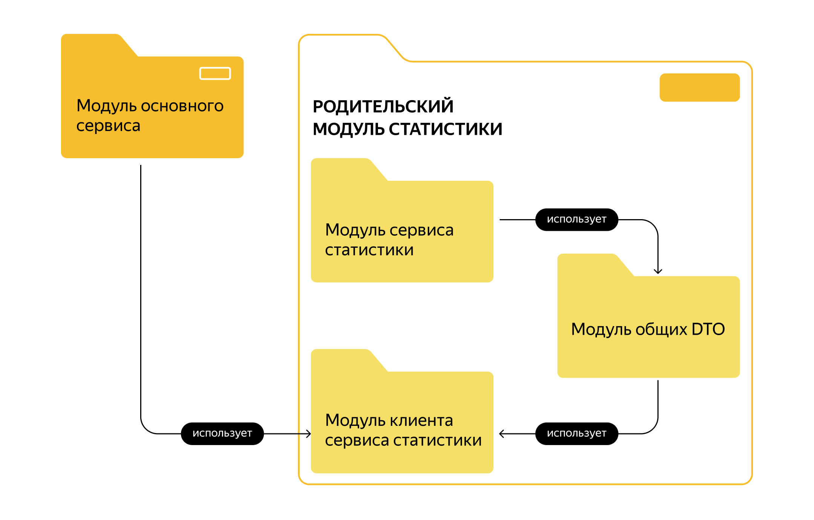

Егор Ерохин
наставник
Заранее зарегистрировать вебинар
(erohinegor)
Спринт 17
Сортировки
Сборка мусора
Многопоточка
Какие сортировки по умолчанию в java и других языках программирования — n log n
mergesort для ссылочных типов, потому что стабильная
Что такое стабильность?
Стабильным (устойчивым, stable) называется алгоритм сортировки, который не меняет порядок элементов с одинаковыми ключами относительно друг друга.
quicksort для примитивов — скорее всего это потому что для них стабильность не важна, потому что кроме значения у них нет других полей.
При этом mergesort требует клонирования массива — для примитивов это большие накладные расходы, тогда как для ссылочных типов нужно только массив ссылок склонировать
Сборка мусора — проблемы с оптимизацией памяти и работой сборщиков мусора встречаются редко, но на собесах могут спрашивать.
Многопоточка также — часто в вакансии пишут, будет ли она, таких вакансий меньше. Но опять же спрашивают на собесах.
Многоядерные процессоры и hiperthreading
Рекурсия
// обычная рекурсия
public static long fact(long n) {
if (n == 0) return 1;
return n * fact(n - 1);
}
// хвостовая рекурсия
public static long factTail(long n, long acc) {
if (n == 1) return acc;
return factTail(n - 1, n * acc);
}
Хвостовая рекурсия — рекурсивный вызов должен быть самым последним в функции.
В первом примере после расчета fact(n - 1) контроль должен вернуться к строке return n * fact(n - 1); чтобы посчитать значение и вернуть результат.
Компиляторы оптимизировать такое не умеют.
Во втором примере — хвостовая. Но я лично против применения рекурсии в продакшен коде, потому что в Java это лишний оверхед на стеки, тк нет оптимизации хвостовой рекурсии.
Модули диплома

Диплом — этап 1
Сервис статистики
Три модуля
Эндпоинты POST /hit GET /stats
Я на вводном все рассказал)
Когда пишете методы клиента, думайте о том, как будете их использовать.
В compose 4 сервиса — сервер статистики, основной сервер и БД для каждого из них.
БД на сервис — обеспечивает низкую связность, независимость сервисов, разрешает вносить изменения в БД отдельного сервиса не влияя на другие. Позволяет скейлить БД независимо, если какие-то сервисы имеют большую нагрузку чем другие.
Начинайте смотреть на фичи, чтобы выбрать какую делать.
** показать как maven модули добавлять